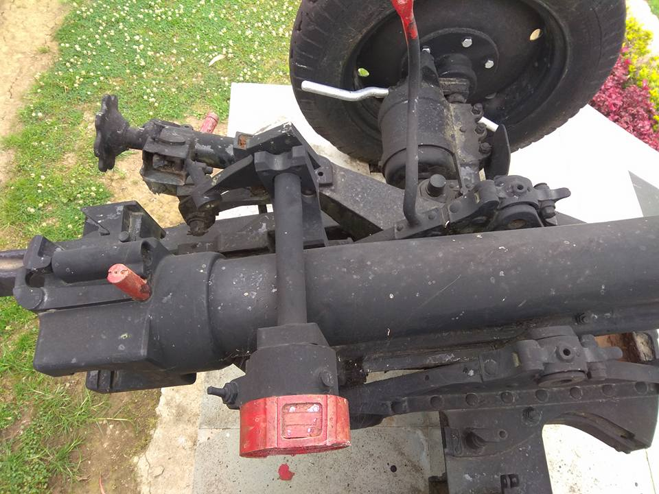
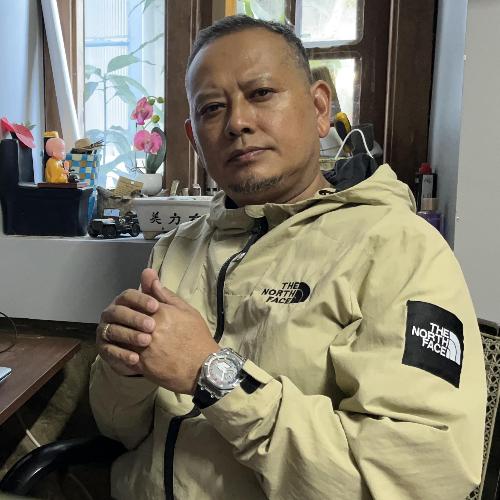
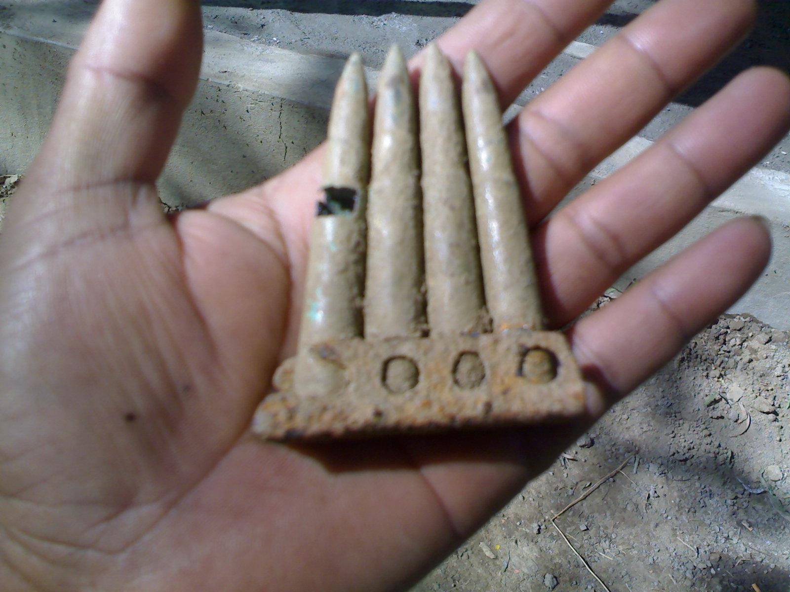
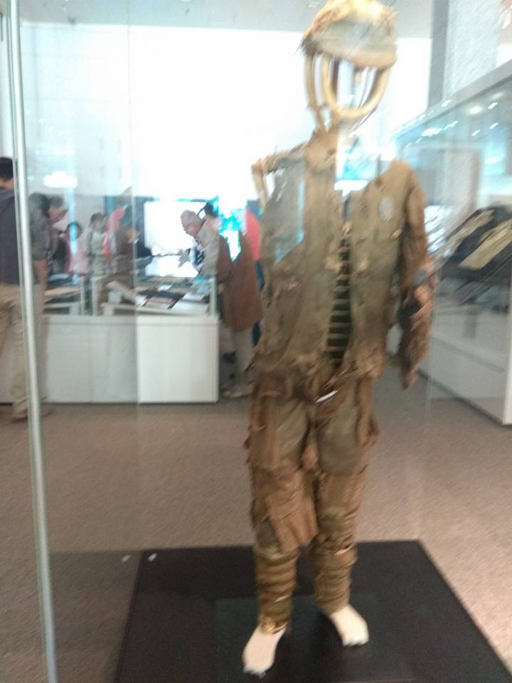
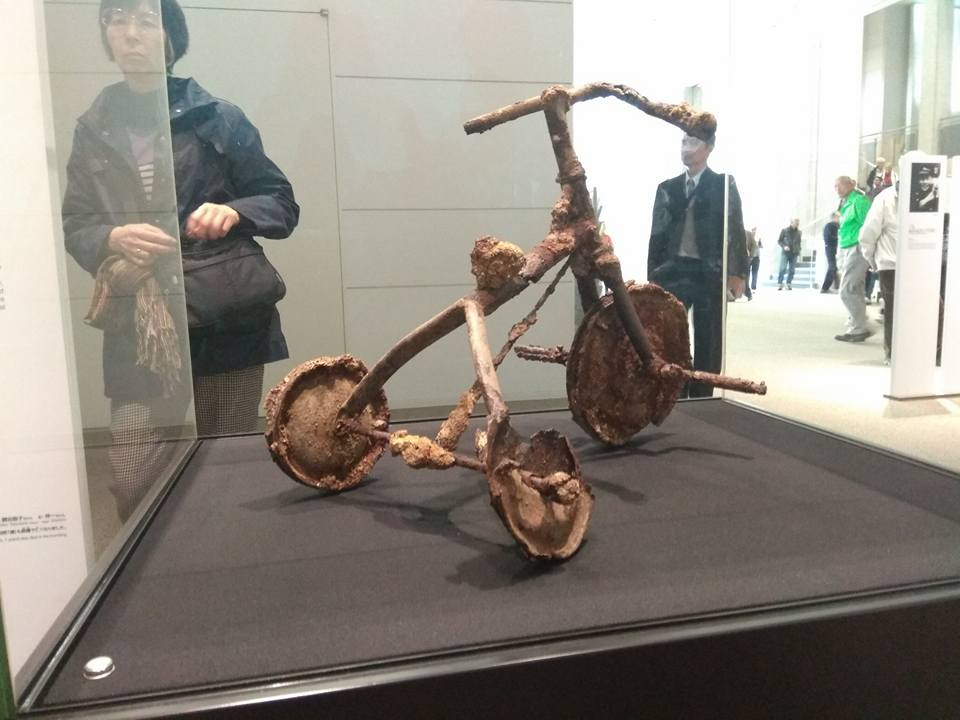
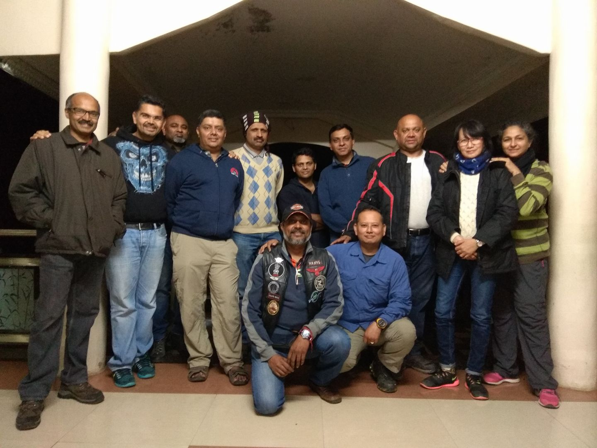
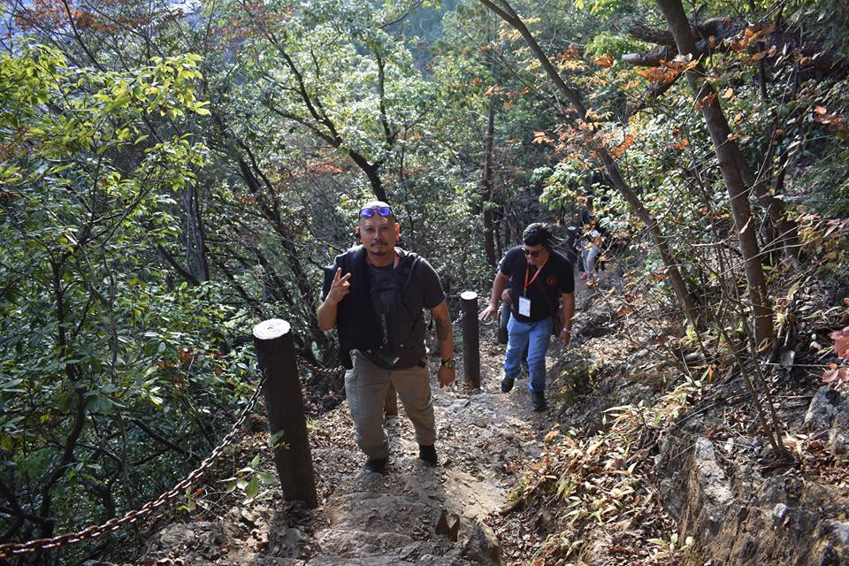
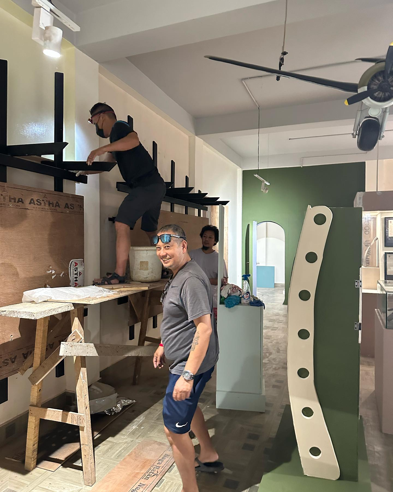

01
Field Relics
Recovered metal, equipment and wartime traces from historic ground.

A private archive of living history
Arambam Angamba is a World War II historian and artifact collector from Manipur, dedicated to protecting the forgotten stories, battlefield relics, and human memories connected to the Imphal–Kohima campaign.
Through recovered objects, guided stories, and careful preservation, his work transforms fragments of war into a quiet archive for future generations.
The mission
The Angamba Archive presents a refined visual record of World War II artifacts, museum encounters, battlefield walks, and preservation work connected to Manipur’s wartime landscape.
Collection

Recovered metal, equipment and wartime traces from historic ground.

Small objects that carry large human stories from the conflict.

Uniforms, displays and interpreted material culture.

Fragments of equipment preserved as testimony.

Visitors, researchers and storytellers keeping memory alive.

Guided trails through the terrain where history remains present.

Battlefield memory
Each artifact is treated not as decoration, but as a witness. The website guides visitors through the emotional weight of the objects: where they were found, what they suggest, and why the memory of Imphal matters.
Visitor guestbook
Visitors, researchers, students and families can sign the guestbook with their name, country and message. This demo version is ready visually; later we can connect it to Firebase, Supabase or Appwrite.